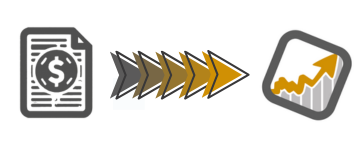
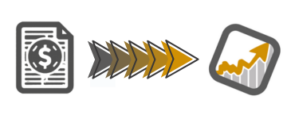

Aby wyeksportować dane z platformy Finax, wejdź w szczegóły transakcji swojego rachunku. Przegląd rachunków -> Szczegóły konta -> Przegląd transakcji
Aby wyeksportować dane z platformy Mbank, upewnij się, że jestś na właświwym profilu, a następnie przejdź do histori inwestycji: Produkty -> Inwestycje -> Wszystkie -> Twój portfel inwestycyjny -> Historia
Jeśli chcesz pobrać dane kupna i sprzedaży akcji, przejdź do zakładki Kupno/Sprzedaż. Jeżeli chcesz pobrać dane operacji na koncie, przejdź do zakładki Operacje.
Zaloguj się i przejdź do widoku transakcji które chcesz zaimportować. Nie musisz rozwijać szczegułów transakcji, wtyczka zrobi to za Ciebie.
Zaloguj się i przejdź do widoku histori inwestycji.
Upewnij się, że wybrałeś odpowiedni zakres dat.
❓ Czy chcesz zaimportować dane z konta Funding z okresu dłuższego niż 90 dni?
Jak pobrać dane z Bybit
Zakładka All Transactions dla konta Funding Account pokazuje pełne dane tylko dla ostatnich 90 dni, dlatego starsze operacje trzeba pobrać osobno z konkretnych sekcji (Deposit, Withdraw, P2P, One-Click Buy itd.) w zakładce History.
Poniższe przyciski zbierają te dane i łączą je w jeden plik do importu w MyFund.
1️⃣ Funding Account – przejdź do:
Assets → Funding Account → History → zakładka History.
Wejdź do konkretnej sekcji (np. Deposit, Withdraw, P2P itp.) – wtedy jeden z przycisków poniżej stanie się aktywny.
Następnie wybierz zakres dat i pobierz dane. Możesz powtarzać proces dla dowolnej liczby sekcji.
⚠️ Uwaga:
Dane z kolejnych sekcji są dodawane do zbioru przeznaczonego do importu.
Wtyczka dba aby pobierane rekordy nie duplikowały się.
Jeżeli pobrałeś zbyt dużo danych możesz usunąć je pojedyńczo w MyFund lub skasować wszystkie zapisane do tej pory rekordy z Bybit klikając w ikonke kosza i zacząć ich pobieranie od nowa.
2️⃣ Unified Trading Account – przejdź do:
Assets → Unified Trading Account → History Records → Transaction Log, wybierz zakres dat i pobierz dane.
ℹ️ Wskazówka:
Możesz zaimportować dane tylko z jednego konta – Funding lub Unified.
Upewnij się jednak, że transakcje z drugiego konta zostały już wcześniej wczytane do MyFund.
Import z Bybit przewiduje wykonanie 2 kroków:
1️⃣ Funding Account – przejdź do:
Assets → Funding Account → History → zakładka All Transactions.
Wybierz zakres dat i kliknij „Pobierz dane”.
2️⃣ Unified Trading Account – przejdź do:
Assets → Unified Trading Account → History Records → Transaction Log.
Wybierz zakres dat i kliknij „Pobierz dane”.
⚠️ Uwaga:
Jeśli pobrałaś już transakcje z zakładki History, pobranie danych z zakładki All Transactions spowoduje ich nadpisanie.
Natomiast jeśli wcześniej pobierałaś dane z Unified Trading Account, pobranie nowych danych z Funding Accountnie usunie tamtych zapisów.
ℹ️ Wskazówka:
Możesz zaimportować dane tylko z jednego konta – Funding lub Unified.
Upewnij się jednak, że transakcje z drugiego konta zostały już wcześniej wczytane do MyFund.
Po pobraniu danych wtyczka automatycznie przekieruje Cię do MyFund, gdzie wkleisz kompletny zestaw transakcji.
Wejdź na stronę jednej z obsługiwanych platform (...).
 
